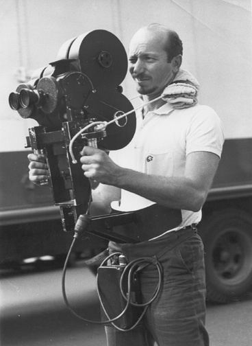

Ivan Edward Sutherland
Ivan Edward Sutherland
An American computer scientist and internet pioneer famously referred to as the "father of computer graphics".
He was born on May 16,1938 in Nebraska, United States and is currently 83 years old. Sutherland earned his bachelor's
degree in electrical engineer from Carnegie Institue of Technology. Whilst sharing his knwoledge of computer science
as a professor at Harvard University, Sutherland along with his student, Bob Sproull developed the first virtual reality
headset which he later nickanamed "Sword of Damcoles" due to its weight. Sutherlands ultimate goal was "TO SURRENDER THE
USER WITH THREE-DIMENSIONAL INFORMATION".

Morton Leonard Heilig
Born December 22, 1926 and died in May 14, 1997. He was a cinemographer whose background was in Hollywood motion picture
industry. He wanted to see how people could feel like they were in the movie and so he created the Sensorama, a non-compueterized
machine in 1956. Sensorama experience simulated real city environment which you "rode" through on a motorcycle.
 Jaron Zepel Lanier
Jaron Zepel Lanier
An american computer scientist, computer philosphy writer and visual artist born on May 3,1960in the New York City. Jaron Lanier has
been on the cusp of technological innovation from its infancy to the present. At the age of 13, he convinces New Mexico State University
to let him enroll in order to pursue his education in computer programming. In 1984 Lanier founded VPL (visual programming language).
His company VPL Research, Inc. was the first to sell VR google and wire gloves. His development in VR products led to teams originating
VR applications for medicine, design, and numerous other fields.
 Palmer Freeman Luckey
Palmer Freeman Luckey
An american entrepreneur born on September19, 1992. He is the founder of Oculus VR and designer of Oculus Rift, a virtual realityhead-mounted
display that is widely credited reviving the virtual relaity industry.